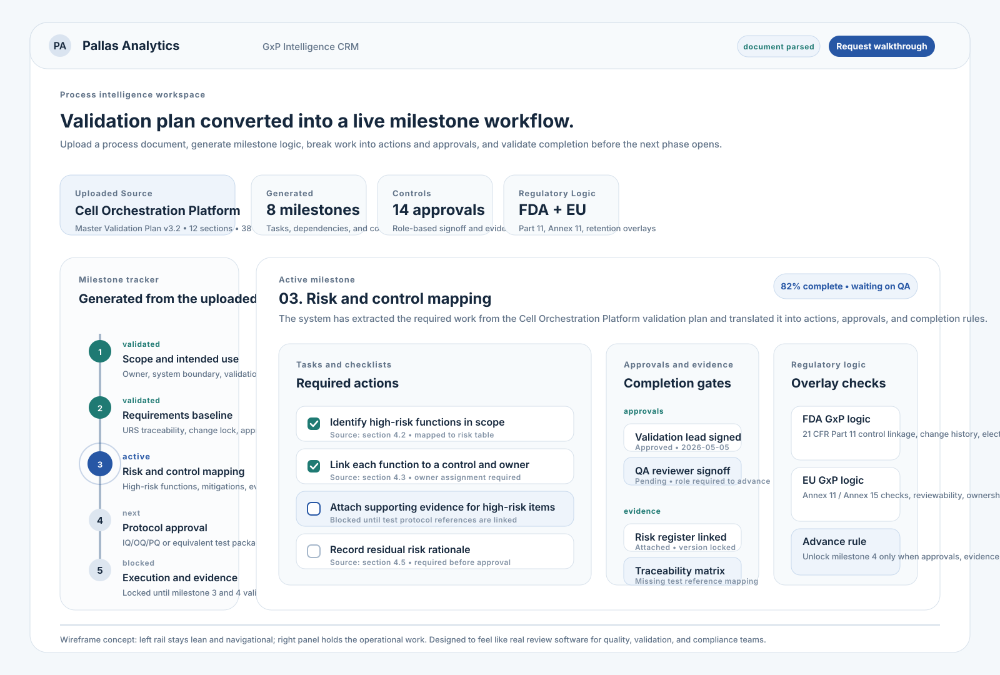

Generate a working sequence of milestones, dependencies, and task requirements instead of building them by hand.
Use case: regulated operations
Turn regulated process documents into a live decision pipeline.
Regulated Pipeline CRM turns validation plans, requirements, approvals, and operating signals into a live system that helps teams see what is complete, what is blocked, and what must happen next before the pipeline can advance.
Outcomes
Built for the people who carry compliance risk and deployment accountability.
The CRM helps regulated organizations move from fragmented records and static validation packages to a live pipeline where readiness, risk, and next actions stay visible.
Break each milestone into concrete tasks, approvals, and evidence checks so teams know exactly what must be accomplished.
Confirm the milestone is truly complete against the validation document before the next phase opens up.
Overlay FDA GxP, EU GxP, and data-retention concerns so teams can spot gaps early instead of late.
What It Does
It turns validation logic into a working operating picture.
The product shows quality and compliance teams what the environment requires before a model moves forward, turning validation logic into a workflow they can inspect, discuss, and act on.

How the workflow behaves
The left rail shows the sequence of milestones. Selecting one opens the right panel with tasks, evidence needs, approvals, and dependencies drawn from the uploaded plan.
Each milestone breaks into specific actions, approvals, and completion checks so the work is operational instead of buried in narrative text.
The system checks completion against the plan and applicable GxP logic before the next milestone becomes available.
What changes after adoption
Request Demo
See how a regulated pipeline becomes easier to track, review, and move forward.
Tell us what kind of regulated environment you operate in and what kind of pipeline you want to make more interactive, live, or accountable. We’ll reply with the right demo or proof-of-concept link.
Use our intake form to describe the regulated workflow, validation burden, or milestone logic you want to explore. We’ll use that context to prepare the most relevant walkthrough.
Open the Demo Request Form
The form opens in a new tab.